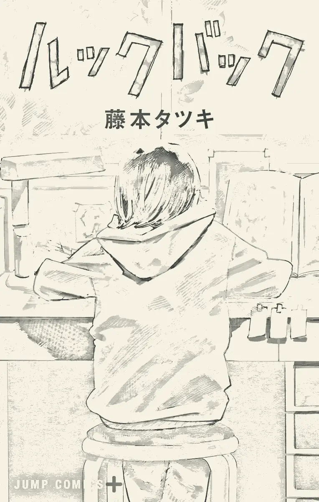

Fire Punch
Pria yang terbakar abadi di dunia beku. Debut serial yang brutal dan tak terduga, 8 volume di Shōnen Jump+.
01 — 部屋 · Kamar Fujino
Seorang anak kelas empat menggambar di kamarnya, membelakangi dunia. Di ujung desa yang sama, seseorang menggambar lebih baik darinya. Dari situ semuanya dimulai.

02 — 人物 · Tokoh
設定資料 · No.01
藤野
Si pencerita · Pengisi suara: Yūmi Kawai
Bintang kecil koran kelas. Komik empat panelnya selalu bikin satu kelas tertawa, dan ia sangat menikmati pujian itu. Saat sadar ada anak lain yang menggambar jauh lebih baik, gengsinya terluka. Jawabannya: berlatih tanpa henti, buku sketsa demi buku sketsa.
Kemampuan · versi penggemar
“Aku cuma perlu berlatih lebih keras.”
設定資料 · No.02
京本
Si penggambar latar · Pengisi suara: Mizuki Yoshida
Teman sekelas yang tak pernah datang ke sekolah. Sendirian di kamarnya, ia menggambar latar dengan ketelitian yang membuat orang dewasa pun terdiam. Di balik pintu itu, diam-diam ia penggemar nomor satu Fujino. Belakangan ia punya mimpinya sendiri: belajar melukis lebih serius di sekolah seni.
Kemampuan · versi penggemar
“Fujino-sensei… aku penggemarmu!”
設定資料 · No.03
藤野キョウ
Nama pena berdua · Fujino + Kyomoto
Begitu pintu itu terbuka, dua meja dirapatkan. Fujino memegang cerita dan tokoh, Kyomoto mengisi setiap latar. Mereka mengirim naskah sebagai satu nama, dan untuk beberapa tahun, satu nama itu sudah cukup untuk menaklukkan dunia kecil mereka.
Kemampuan · versi penggemar
“Dua nama, satu halaman.”
03 — 道 · Jalan Pulang
Akita bagian pesisir: sawah membentang sampai kaki gunung Chōkai, tiang listrik berderet di pinggir jalan sepi. Setelah dipuji oleh orang yang paling ia kagumi, Fujino pulang menari di bawah hujan. Mungkin itu adegan paling bahagia di seluruh cerita.
“Langit cerah. Seperti biasa.”
04 — 教室 · Ruang Kelas
Setiap minggu komik empat panel Fujino dimuat di koran kelas, dan seisi kelas memujinya. Lalu muncul komik dari Kyomoto, anak yang tak pernah datang ke sekolah, dengan latar yang digambar sangat teliti. Geser garis pembatas untuk membandingkan keduanya.
05 — 扉 · Pintu Kyomoto
Di hari kelulusan, Fujino diminta mengantar ijazah ke rumah Kyomoto. Ia tidak mengetuk. Ia menggambar komik empat panel dan menyelipkannya lewat celah pintu. Satu kertas kecil yang mengubah hidup dua orang.
Pintu terbuka. Ternyata selama ini ada yang membaca setiap komiknya, dan sudah lama menunggu untuk berkata: “Fujino-sensei!”
06 — 季節 · Empat Musim
1 buku sketsa terisi
後ろ · Bagaimana jika…
Di paruh akhir, Look Back berubah menjadi renungan tentang duka dan rasa bersalah. Sebuah tragedi menghantam, dan Fujino bertanya-tanya apakah semuanya akan berbeda seandainya ia tak pernah menyelipkan komik itu di bawah pintu.
Fujimoto lalu membayangkan dunia lain, tempat dua gadis itu tak pernah bertemu, dan selembar komik kembali menyelinap lewat celah pintu, kali ini ke arah yang berlawanan. Jawabannya tidak diucapkan. Jawabannya ada pada punggung yang kembali membungkuk di atas meja.
07 — 場面 · Galeri Adegan
Sutradara Kiyotaka Oshiyama membiarkan garis pensil tetap hidup di layar, goyah dan bernapas seperti sketsa. Seret pita film di bawah, lalu klik adegan mana pun untuk melihatnya lebih besar.
08 — 作者 · Tatsuki Fujimoto
Lahir di Nikaho, Akita, kota pesisir dengan sawah dan gunung yang sama seperti di Look Back. Karya Fujimoto dikenal karena panel yang terasa sinematik, halaman tanpa dialog yang dibiarkan bernapas, dan kesediaannya mematahkan hati pembaca tanpa peringatan. Look Back adalah karyanya yang paling personal: surat cinta, sekaligus surat duka, untuk setiap orang yang menggambar.
Pria yang terbakar abadi di dunia beku. Debut serial yang brutal dan tak terduga, 8 volume di Shōnen Jump+.
Denji, Pochita, dan iblis-iblis yang lapar. Karya yang membuat nama Fujimoto meledak ke seluruh dunia.
143 halaman tentang dua gadis yang menggambar. Dibaca jutaan kali di hari pertama terbit.
Sekitar 200 halaman, seluruhnya dibingkai seperti rekaman kamera ponsel. Tentang film, kematian, dan sedikit ledakan.
Kumpulan cerita pendek dari masa awal. Bibit-bibit dari semua yang datang kemudian.
Diadaptasi oleh Studio Durian, dengan banyak adegan yang digambar tangan langsung oleh sutradaranya. Garis pensil kasar sengaja dibiarkan terlihat, persis seperti halaman manga yang hidup.
終 · Akhir
Karena seseorang pernah membacanya. Karena masih ada halaman kosong. Karena punggung yang membungkuk di atas meja itu tidak pernah benar-benar sendirian.